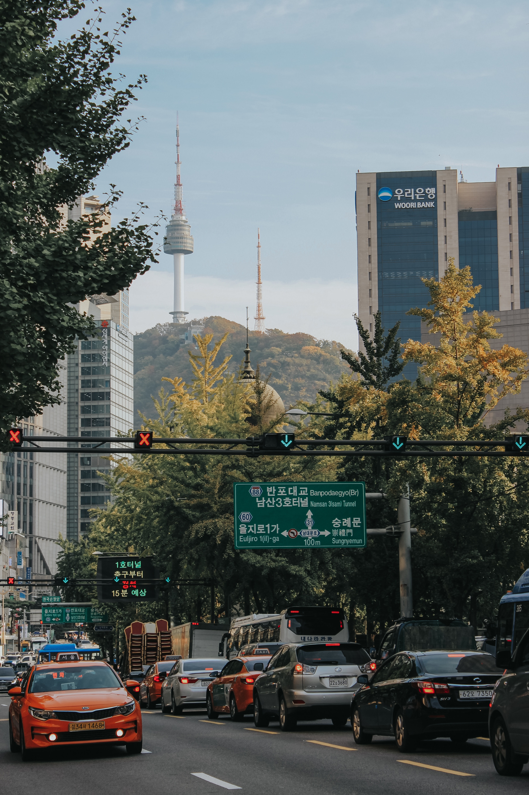
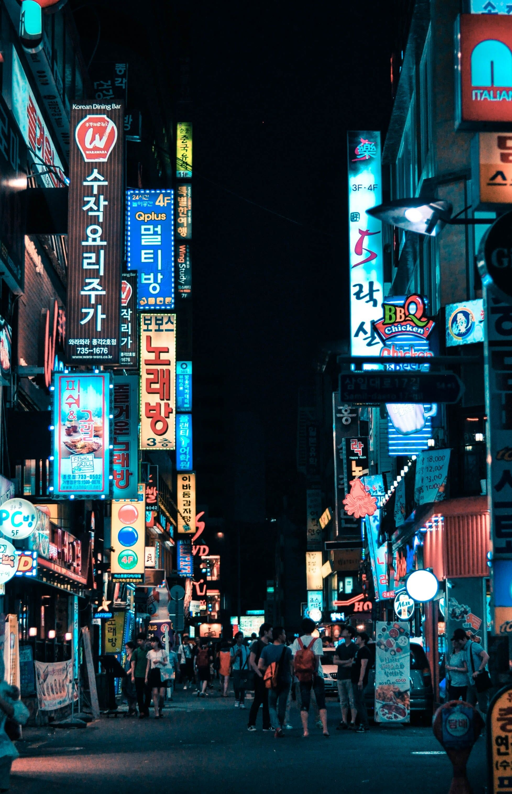
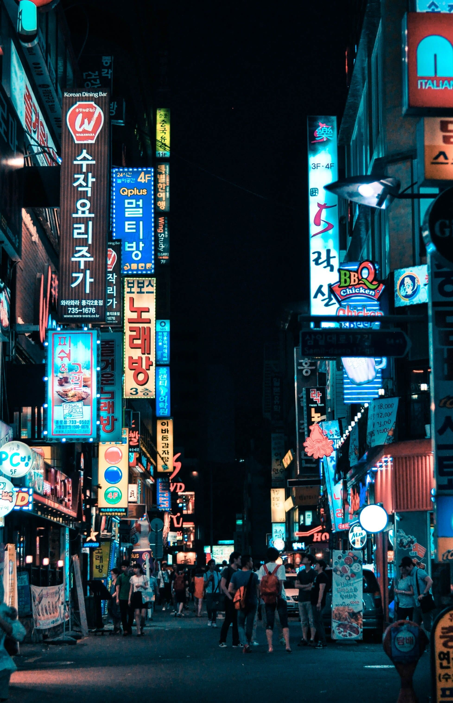
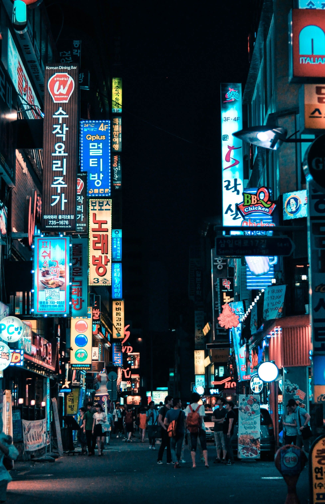

Discover yourself in Asia and beyond

Travel Tips for Seoul
What you need to know before traveling here
Seoul Metro is an underground railway system with over 20 lines that cover most areas of South Korea’s capital city. The subway operates daily from 04.00 to 01.00.
It is affordable to use this public transportation, with ticket prices starting from 1,350 won or approximately US$1 for one person. You can even enjoy a discount of 100 won if you use Tmoney (local electronic money). Besides being affordable, Seoul Metro also offers fast Wi-Fi. Many of the city's sights are a walking distance from various metro stations.
To find Seoul Metro’s schedule, you can simply download apps like Subway Korea and KakaoMetro. These apps provide a real-time train schedule based on the stations, so there is no need to worry about missing the train. The trains are timely.
If you want to explore Seoul comfortably, avoiding the subway during rush hours is advisable, particularly from 07.00 to 09.00 and from 18.00 to 19.00.
Bus is another transportation option in Seoul. Like Seoul Metro, buses in the South Korean capital operate daily from 06.30 to 23.30. Midnight buses are also available from 21.00 to 07.00 with an hourly interval.
Buses in Seoul are easily distinguishable by their different colors, which correspond to their respective routes.
Seoul has three types of buses: general, rapid, and local. Local buses come in four different colors: blue (mainline buses that connect suburban areas to downtown Seoul); green (branch buses that link subways with intercity bus terminals); yellow (circulation buses that cover Seoul’s main centers and stop at tourist, shopping, and business areas). Meanwhile, red-colored buses are rapid buses that operate on express routes connecting metropolitan areas and downtown Seoul. Local buses specifically serve residential areas within Seoul.
To use this mode of transportation, you can pay with either cash or Tmoney. Ticket prices range from 1,200 won depending on the type of bus.
For those who prefer not to squeeze into public transportation, a taxi can be a convenient option to explore South Korea's capital. This transportation is recommended for its affordable base fare, starting at 4,800 won.
You can hail a taxi on the street or use an application to travel around the city comfortably. The two most popular applications in Seoul for calling taxis are Kakao T and T Map, both are easy to navigate, and the service is available in English and Japanese.
Moreover, various types of taxis in Seoul cater to different travel needs. If you are traveling with family, you can opt for a jumbo van taxi readily available at the airport to accommodate more than three people.
Interestingly, Seoul also has international taxis specifically designed for foreign tourists. These taxis have higher fares, and the drivers are fluent in English, Japanese, and Mandarin Chinese. To use this service, you can look for an orange-colored taxi with “International” writing displayed on its sides.

 


